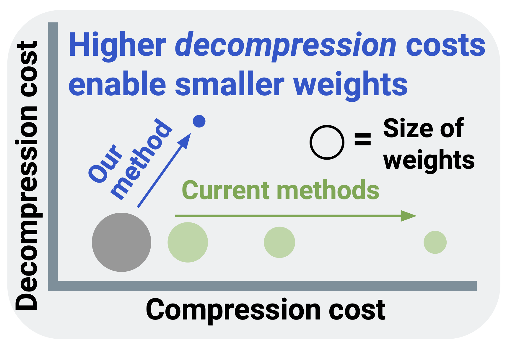

I am a first-year PhD student at the University of Pennsylvania advised by Eric Wong and Hamed Hassani, with research interests in AI safety, security, and the science of deep learning. I'm also a research scientist in the National Security Directorate at Pacific Northwest National Lab. Previously, I worked with a couple startups / majored in physics at UNC as a Morehead-Cain scholar.
I've most recently been thinking about a) evals and b) AI security. See below for my current working papers, and please do reach out if you'd like to chat.
My paper feed of under-appreciated research (most recent: June 2025).
Recent Papers
2025
Adaptively profiling models with task elicitation

Paper Description
Language models have a 'jagged frontier' of capabilities and behaviors, performing exceptionally well on some tasks and brittle on others. We map this frontier by adaptively probing the model under evaluation with new tasks. We term this procedure as task elicitation, and generate new hard tasks in truthfulness, forecasting, social harms, and more.
ICML '25 (spotlight)
A Suite of Datasets Capturing Research-level Conjecturing Ability in Pure Mathematics
Paper Description
We build datasets and tasks desgined to evaluate a model's ability to generate new research-level algebraic combinatorics conjectures. Many of the problems we select are currently open and pose strong challenges to both frontier models and mathematicians using models-as-tools. For each problem, we provide a large amount of associated data and train narrow models to both serve as baselines / objects of study for interpretability.
2025
How Does LLM Compression Affect Weight Exfiltration Attacks?
Paper Description

Models can be compressed far more than standard practice suggests (e.g., 4 bits-per-parameter) if one is willing to do a bit of additional training to 'decompress' them afterwards. This increases the risk of model weight exfiltration. We find some early evidence that larger models are easier / cheaper to compress in this way.
Some older work
EMNLP '23
Understanding the Inner Workings of Language Models Through Representation Dissimilarity
Paper Description
We apply model-diffing methods to compare the hidden layers between different language models. We show that these measures can identify and locate generalization properties of models that are invisible if you just look at test set performance.
HiLD ICML '23
On Privileged and Convergent Bases in Neural Network Representations
Paper Description
The neuron basis of neural networks 'matters,' in that it is necessary to have one to achieve good performance. However, it does not matter that much, in that the basis is inconsistent across training runs.
NeurIPS '22
On the Symmetries of Deep Learning Models and their Internal Representations
Paper Description
We characterize how activation functions lead to certain symmetries. Then, we provide some experiments on model stitching, where we 'glue' together different hidden layers of models by learning permutations between their respective neurons-- this works surprisingly well.